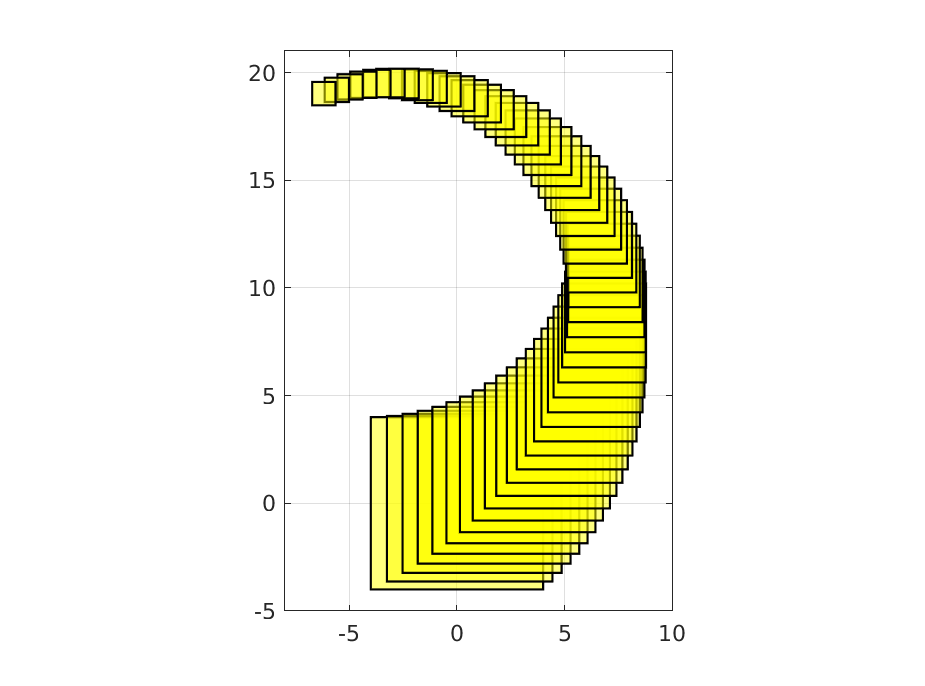

Contents
close all;clearvars;srtinit;srtinit --version;
time_horizon = 50;
time_const = 1/2*time_horizon;
init_heading = pi/10;
sampling_time = 0.1;
box_halflength = 4;
omega = pi/time_horizon/sampling_time;
turning_rate = omega*ones(time_horizon,1);
dist_cov = 0.001;
probability_threshold_of_interest = 0.8;
no_of_direction_vectors_ccc = 16;
v_nominal = 10;
umax = v_nominal/3*2;
SReachTools version 1.2.26
LTV system definition
[sys, heading_vec] = getDubinsCarLtv('add-dist', ...
turning_rate, ...
init_heading, ...
sampling_time, ...
Polyhedron('lb',0,'ub',umax), ...
eye(2), ...
RandomVector('Gaussian',zeros(2,1), dist_cov * eye(2)));
target_tube_cell = cell(time_horizon + 1,1);
Target tube definition
figure(100);clf;hold on
angle_at_the_center = (heading_vec) - pi/2;
center_box = zeros(2, time_horizon + 1);
for itt = 0:time_horizon
center_box(:, itt+1) = v_nominal * [cos(angle_at_the_center(itt+1))-cos(angle_at_the_center(1));
sin(angle_at_the_center(itt+1))-sin(angle_at_the_center(1))];
target_tube_cell{itt+1} = Polyhedron('lb',center_box(:, itt+1) - box_halflength * exp(- itt/time_const), 'ub', center_box(:, itt+1) + box_halflength*exp(- itt/time_const));
plot(target_tube_cell{itt+1},'alpha',0.5,'color','y');
end
axis equal
axis([-8 10 -5 21]);
box on;
grid on;
target_tube = Tube(target_tube_cell{:});

Set of direction vectors
theta_vector_ccc = linspace(0, 2*pi, no_of_direction_vectors_ccc+1);
theta_vector_ccc = theta_vector_ccc(1:end-1);
set_of_direction_vectors_ccc = [cos(theta_vector_ccc);
sin(theta_vector_ccc)];
Set computation
timer_polytope_ccc = tic;
opts = SReachSetOptions('term', 'chance-open', 'pwa_accuracy', 1e-3, ...
'set_of_dir_vecs', set_of_direction_vectors_ccc, ...
'init_safe_set_affine',Polyhedron(),'verbose',0);
[ccc_polytope, extra_info] = SReachSet('term','chance-open', sys, 0.8, target_tube, opts);
elapsed_time_polytope_ccc = toc(timer_polytope_ccc);
fprintf('Time taken for computing the polytope (CCC): %1.3f s\n', elapsed_time_polytope_ccc);
Time taken for computing the polytope (CCC): 62.957 s
Plot the set
figure(101);
clf;
hold on;
plot(target_tube(1));
plot(ccc_polytope,'color','b');
axis equal
axis (1.2*[-box_halflength box_halflength -box_halflength box_halflength]);
box on;
legend('Target set at t=0','Stochastic reach set','Location','SouthEast');
set(gca,'FontSize',20);